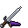

Rogue
The Rogue is a dagger fighter who teleports behind enemies, blinds and poisons them, and hits hard, scaling with Swiftness, Precision, Ferocity and Fortune.

Role
The Rogue brings utility, debuffs and high burst damage. You step behind your target, throw knives, vanish in smoke and finish enemies off with fast dagger hits. Of all the classes, the Rogue spreads its power over the most stats: Swiftness, Precision, Ferocity and Fortune.
| Role | Melee burst, debuffs, evasion |
| Casts with | Any dagger |
| Starter weapon | Assassin’s Dagger |
| Armour | Light leather looks. Rogue armour rolls less armour than a Warrior's. |
| Scales with (+25% training XP) | Swiftness, Precision, Ferocity, Fortune |
| Keys | 4: Right-click, Sneak + Right-click, F, Sneak + F |
| Subclasses (level 20) | Assassin, Poisoner, Duelist |
Weapons and armour
- Every dagger is a Rogue class weapon. Daggers attack fast and cast your abilities.
- Rogue gear rolls mostly Ferocity, Precision, Swiftness and Fortune. It rarely rolls Might, Fortitude, Toughness, Vitality or Arcana.
- The Thief’s Gold amulet has a passive that only works for Rogues. See Amulets.
See Weapons and Armour for the full lists.
Abilities
Damage is a base number plus a share of your stat levels: "4 + 40% Ferocity + 20% Swiftness" at Ferocity 30 and Swiftness 20 deals 4 + 12 + 4 = 20. Hover an ability on the class page to see your numbers. See Abilities for how keys, mana and cooldowns work.
| Key | Ability | Mana | Cooldown | What it does | Damage |
|---|---|---|---|---|---|
| Right-click | Shadowstep | 15 | 5 s | Teleport behind the enemy you look at (10 blocks). Your next melee hit within 3 s deals bonus damage. | bonus 4 + 40% Ferocity + 20% Swiftness |
| Sneak + Right-click | Fan of Knives | 20 | 6 s | Throw 5 knives in a cone (10 blocks). | 3 + 25% Precision + 15% Ferocity per knife |
| F | Smoke Bomb | 25 | 15 s | Hostile mobs within 5 blocks are blinded and slowed for 3 s. You turn invisible and fast for 3 s. | none |
| Sneak + F | Ultimate | Unlocks with your subclass. |
Subclasses
| Subclass | Upgrade | Ultimate (Sneak + F) |
|---|---|---|
| Assassin (burst) | Ambush replaces Shadowstep (15 mana, 5 s): a Shadowstep that also turns you invisible for 2 s. Your next melee hit deals 8 + 70% Ferocity + 30% Swiftness + 20% Fortune bonus damage. | Death Mark (50 mana, 40 s): mark the enemy you look at (16 blocks). After 3 s the mark bursts for 10 + 80% Ferocity + 50% Precision + 30% Fortune. |
| Poisoner (damage over time) | Venom Fan replaces Fan of Knives (20 mana, 6 s): 5 poisoned knives in a cone (10 blocks), each for 3 + 25% Precision + 15% Fortune, plus Poison II for 4 s. | Plague (50 mana, 40 s): a 6 s toxic cloud where you look (radius 5). It deals 1 + 8% Precision + 8% Fortune every half second and poisons. |
| Duelist (counters) | Riposte Stance replaces Smoke Bomb (25 mana, 12 s): a 2 s stance with Resistance III. Every hostile mob that hits you is countered for 6 + 50% Ferocity + 30% Precision. | Blade Dance (50 mana, 40 s): a 2 s whirl of blades that hits every enemy within 6 blocks 8 times, for 2 + 10% Ferocity + 10% Swiftness each hit. You have Resistance I and Speed II while dancing. |
Perk tree
Every class tree has the same shape: a shared trunk and three branches, each ending in a keystone. How points, refunds and the Trades nodes work is on Skill trees. Small nodes give bonus stat levels. They work like gear bonuses: they can go past the cap, but they don't unlock perks.
Assassin
The left branch, entered from Thick Hide. Small nodes: 4 × +2 Ferocity, 3 × +2 Precision, 3 × +2 Swiftness.
| Node | Type | Cost | Effect |
|---|---|---|---|
| Keen Edge | Notable | 1 | +1 melee damage and +0.1 attack speed. |
| Backstab | Notable | 1 | Shadowstep's bonus hit deals +50% when it lands from behind. |
| Opportunist | Notable | 1 | +3 melee damage to mobs that are slowed, blinded or poisoned. |
| Marked Prey | Notable | 1 | Death Mark goes off after 2 s (was 3). |
| Cutthroat | ★ Keystone | 3 | Melee hits on mobs below 30% health deal double damage; you take 15% more damage. Fan of Knives throws 3 knives. |
Blade Dancer
The middle branch, entered from Light Feet. Small nodes: 4 × +2 Swiftness, 3 × +2 Ferocity, 3 × +2 Precision.
| Node | Type | Cost | Effect |
|---|---|---|---|
| Battle Fury | Notable | 1 | +0.25 attack speed. |
| Twin Knives | Notable | 1 | Fan of Knives throws 7 knives, each -15%. |
| Flurry | Notable | 1 | Every 4th melee hit ignores your weapon's attack cooldown (full damage). |
| Riposte | Notable | 1 | Riposte Stance counters for +30%. |
| Thousand Cuts | ★ Keystone | 3 | Every melee hit is two hits at 60% each. Shadowstep is gone from your keys. |
Shadow
The right branch, entered from Second Breath. Small nodes: 4 × +2 Swiftness, 3 × +2 Fortune, 3 × +2 Ferocity.
| Node | Type | Cost | Effect |
|---|---|---|---|
| Fleetfoot | Notable | 1 | +8% move speed. |
| Night Stalker | Notable | 1 | At night: Night Vision and Speed I. |
| Long Smoke | Notable | 1 | Smoke Bomb lasts 5 s with a radius of 7. |
| Evasion | Notable | 1 | When a hostile mob hits you: 10% chance of Resistance III for 1 s. |
| Ghost | ★ Keystone | 3 | Smoke Bomb's invisibility lasts until you hit something; your hits from invisibility deal +40%. -2 armour. |
Good to know
- Thousand Cuts also locks out Ambush, the Assassin's version of Shadowstep. Plan your subclass around it.
- Some notables need a particular subclass to do anything: Marked Prey (Assassin's Death Mark) and Riposte (Duelist's Riposte Stance).
- Ferocity trains on kills and gives attack speed. Fortune trains from fresh loot chests, villager trades and enchanting, and adds luck. See Stats.